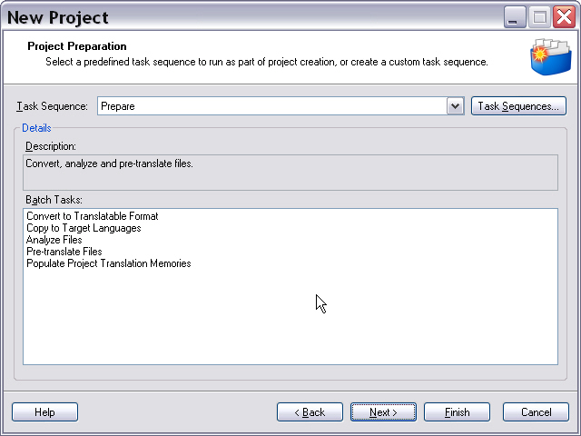
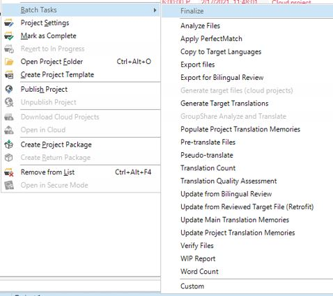

About Tasks
There are two types of tasks available:
- Manual tasks: For example, translating, editing and proofreading. Manual tasks can only be done by users. They are assigned by the project manager.
- Automatic tasks: Are performed by the machine, as they do not require human linguistic skills. Examples of automatic tasks include file analysis, word count, file conversion, etc. During or after creating a project you can run one or several automatic tasks on the project files. One important task is the conversion of native file types into a translatable, bilingual format, i.e. into SDLXliff. This is actually the pre-requisite for running any subsequent automatic or manual task such as word count, translation, editing. One of the most common tasks is the file analysis. This task compares the source segments of a document to the TUs of one or several TMs. This task determines the number of matches (i.e. context matches, exact matches, fuzzy matches) that the TMs contain for a particular document as well as the number of repeated segments. This automatic task then generates a report, which can also be printed by the user and which can be used for a cost estimate. Below you see an example of a file analyze report:

Automatic tasks can be combined in a task sequence. Task sequences are usually run on a project immediately after it has been created, e.g.: converting files to SDLXliff, analyzing files, then pre-translating the project files. Below you see an example of a Prepare task sequence in Trados Studio and the single tasks that the sequence contains:

In Trados Studio, you can also run automatic tasks on one or several selected files by right-clicking the file(s) and selecting the required task from the context menu:

See Also
Running Tasks on Project Files